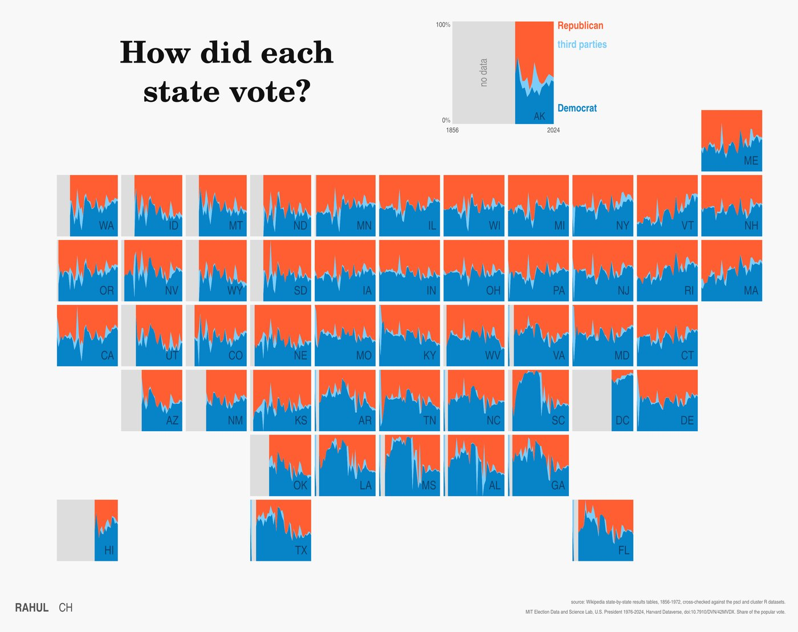
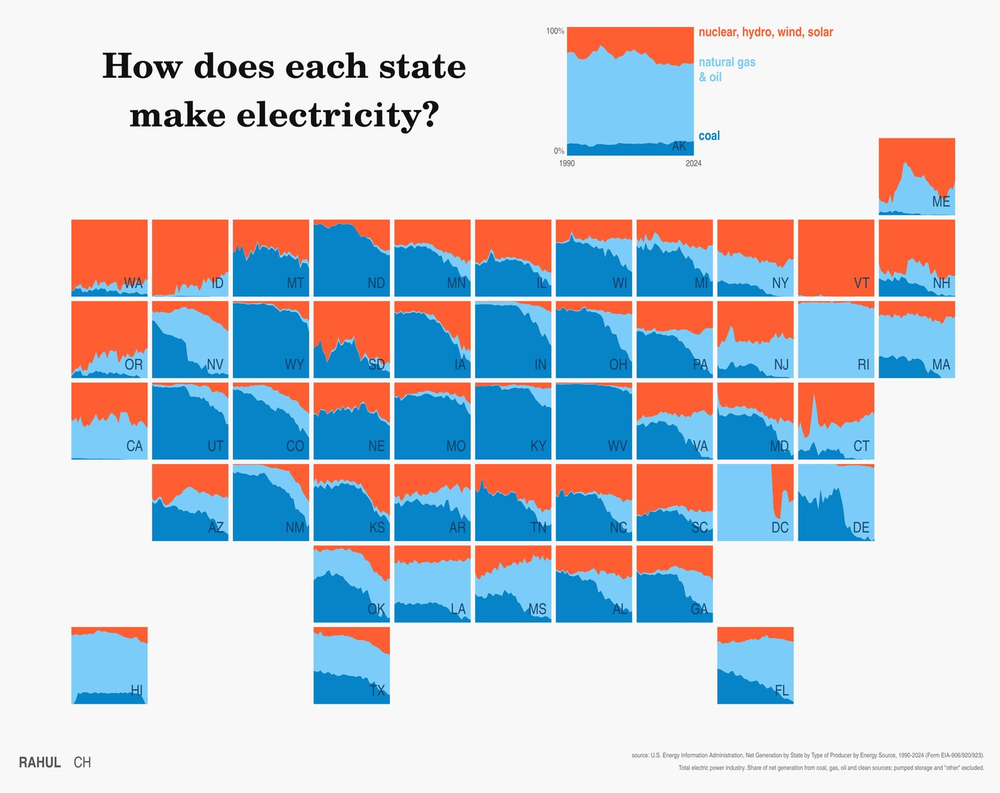
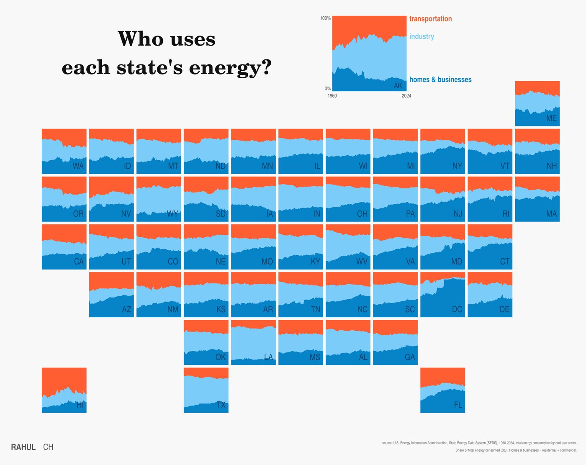
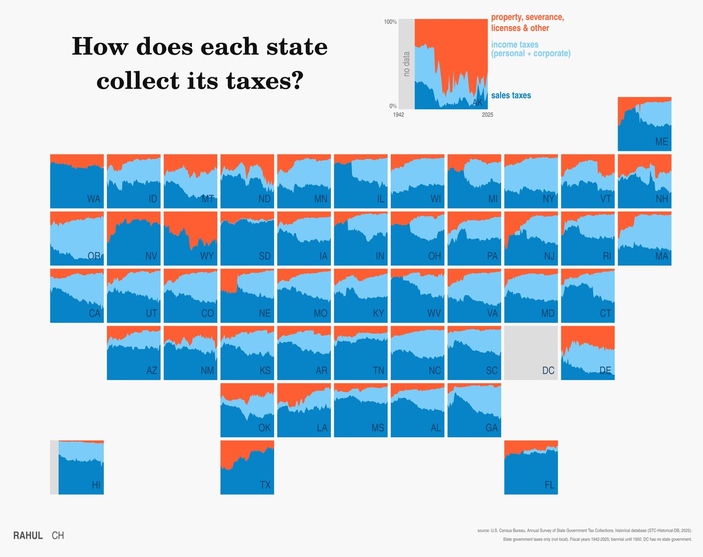
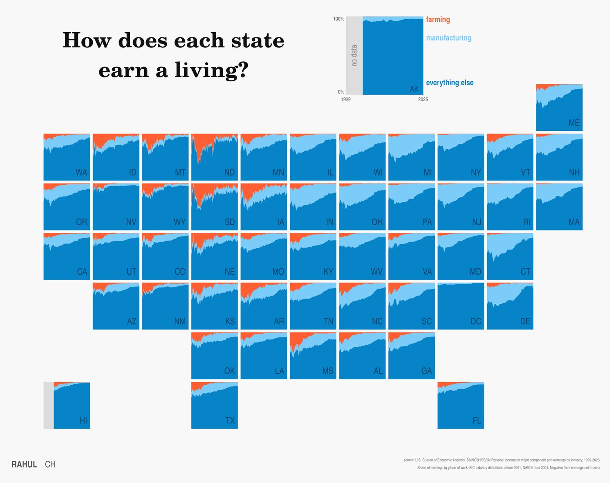
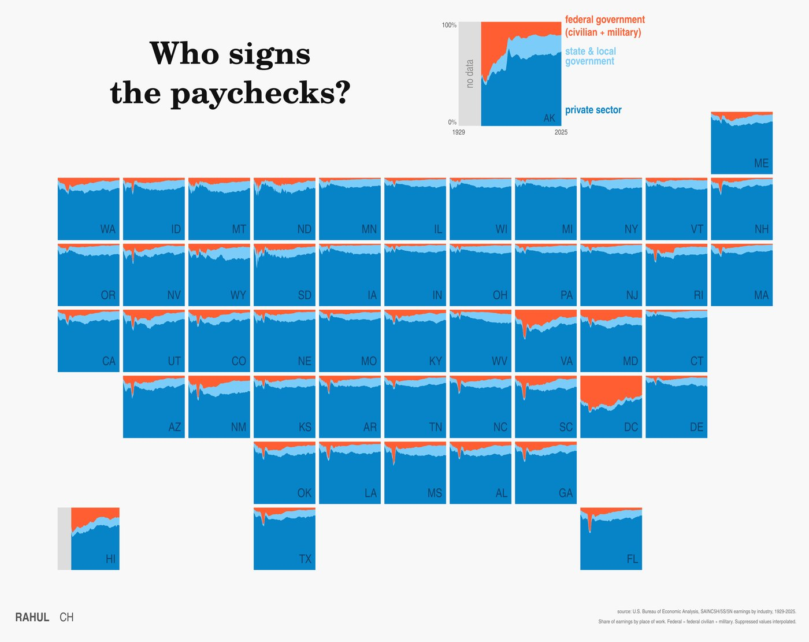
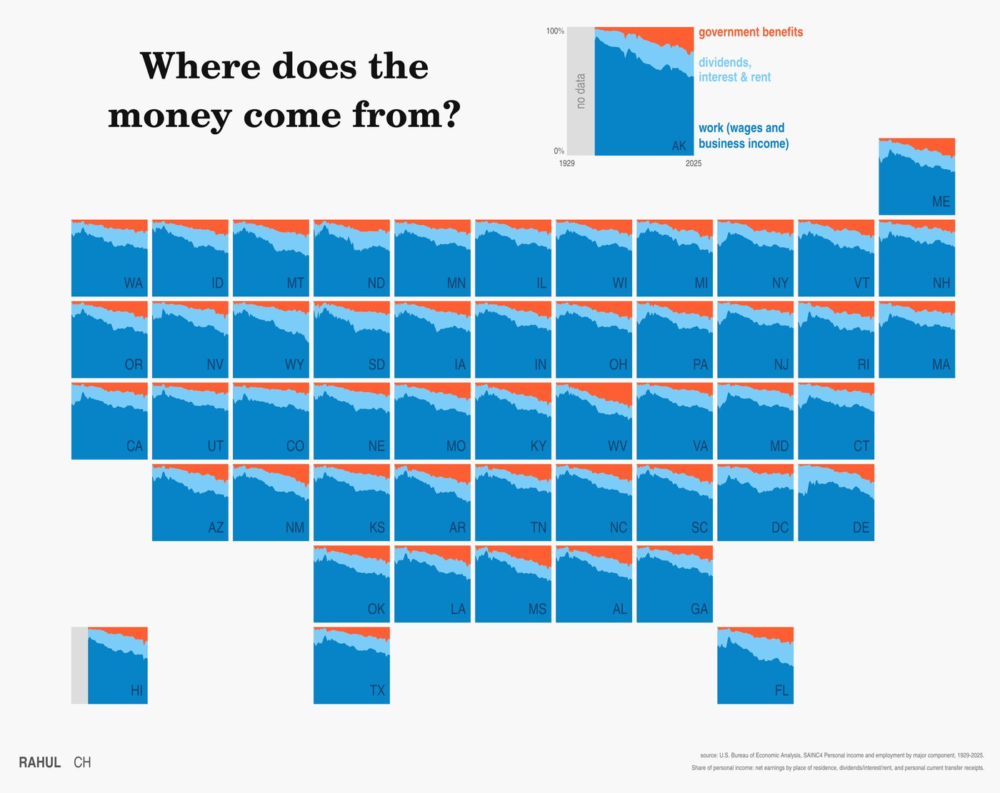

Popular vote share for president. Gray covers the years before statehood and the Civil War elections the seceded states sat out. Mississippi voted 97% Democratic in 1936 and 87% Republican in 1964. Vermont gave Republicans 78% in 1856 and Democrats 63% in 2024. In 1860 the Southern Democrats (Breckinridge) count as a third party, which turns the South light blue that year.

Share of net generation by fuel. Coal supplied 86% of Iowa's power in 1990 and 21% in 2024, while clean sources rose from 13% to 66%. Kansas followed the same path. West Virginia still makes 85% of its power from coal. Delaware swapped coal for gas, and Massachusetts burns no coal at all.

Share of total energy consumed by sector. Industry uses 70% of Louisiana's energy and 56% of Texas's. Transportation takes 59% in Hawaii. In DC, homes and offices now use 83% of the energy and industry 3%, down from 28% in 1960.

State government tax revenue by type. A light blue band appears in the year a state adopts an income tax; Nebraska and Illinois had none in 1960 and over 40% of revenue from it by 2025. Texas and Nevada still have none, and Washington taxes only capital gains. Most of Alaska's orange is oil severance tax, 44% of its 2025 collections.

Earnings by industry. Farming was 42% of North Dakota's earnings in 1929 and 6% in 2025. Manufacturing was 48% of Michigan's earnings in 1950 and is 15% now. Connecticut went from 46% to 9%.

Earnings by employer. World War II shows up as a notch in nearly every tile: federal pay was 45% of Virginia's earnings in 1944 and 56% of DC's. In 1960 the federal government paid 43% of Alaska's earnings and 30% of Hawaii's. State and local government grew in most states after 1960.

Personal income by source. Government benefits such as Social Security, Medicare and Medicaid were 2% of income in most states in 1929. They are 31% in West Virginia and 28% in Mississippi today. Florida gets 32% of its income from dividends, interest and rent.
